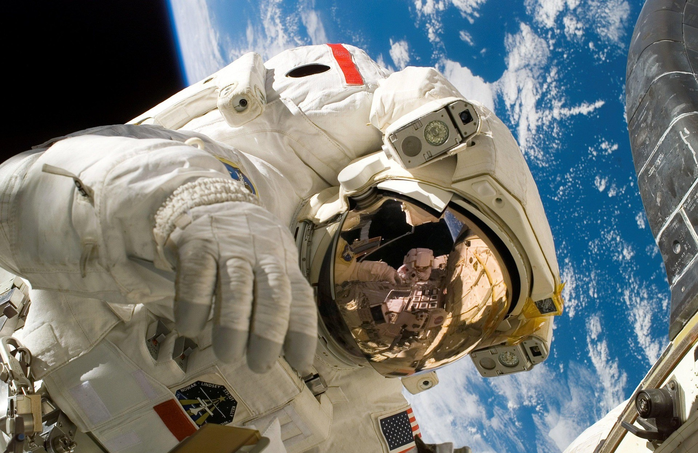
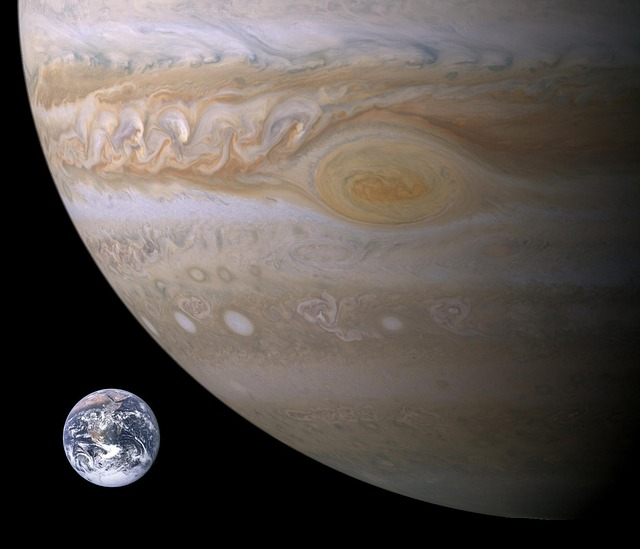

Have you ever wondered what lies beyond our planet? Are we alone in the universe? What secrets are hidden among the stars and distant galaxies? Space exploration helps us search for answers to these questions as scientists and astronauts study the universe beyond Earth. Over the past several decades, missions launched by organizations such as NASA have greatly expanded what we know about space. We have visited the Moon, sent robotic explorers to planets like Mars, and used powerful observatories such as the Hubble Space Telescope to look deep into distant galaxies. Advances in rockets, satellites, space telescopes, and robotic probes have made it possible to travel farther and see more clearly than ever before. As technology continues to improve, scientists hope to answer even bigger questions about the origins of the universe, the possibility of life on other worlds, and the future of human exploration beyond Earth. Keep reading to learn more about the incredible discoveries and technologies that are shaping our journey into space.


Continuing Exploration New lunar and deep‑space missions are on the horizon. In 2026 and beyond, planned missions include China’s Chang’e 7 lunar exploration mission targeting the Moon’s south pole (with orbiters, landers, and rovers) and the LUMIO mission designed to monitor meteoroid impacts around the Moon. Scientists are also preparing for future missions like China’s Tianwen‑3 Mars sample‑return project, aiming to bring Martian rocks back to Earth to search for signs of past life Powerful new space telescopes will broaden our view of the universe. The Nancy Grace Roman Space Telescope is expected to launch in 2026 with a wide‑field infrared survey capability that could detect exoplanets and map cosmic structures, while ESA’s PLATO mission will search for Earth‑like planets around other stars. Scientific research aboard orbiting laboratories continues to grow. Experiments on the International Space Station are probing everything from human‑health challenges to sustainable food production and improved materials, providing data crucial for future long‑duration missions to the Moon and Mars.